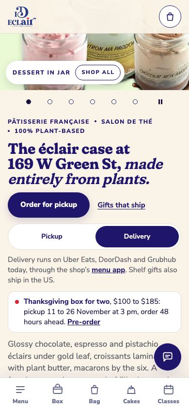

The top of the home page, today
This month the show opens on the Thanksgiving box, with the pre-order line and its dates in the card. Pickup or delivery is one tap; delivery points to the apps you use today. Your second photo of each product appears when a pointer rests on it, as on your site.
Open the home